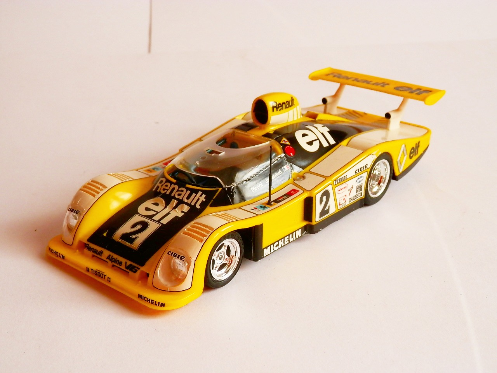
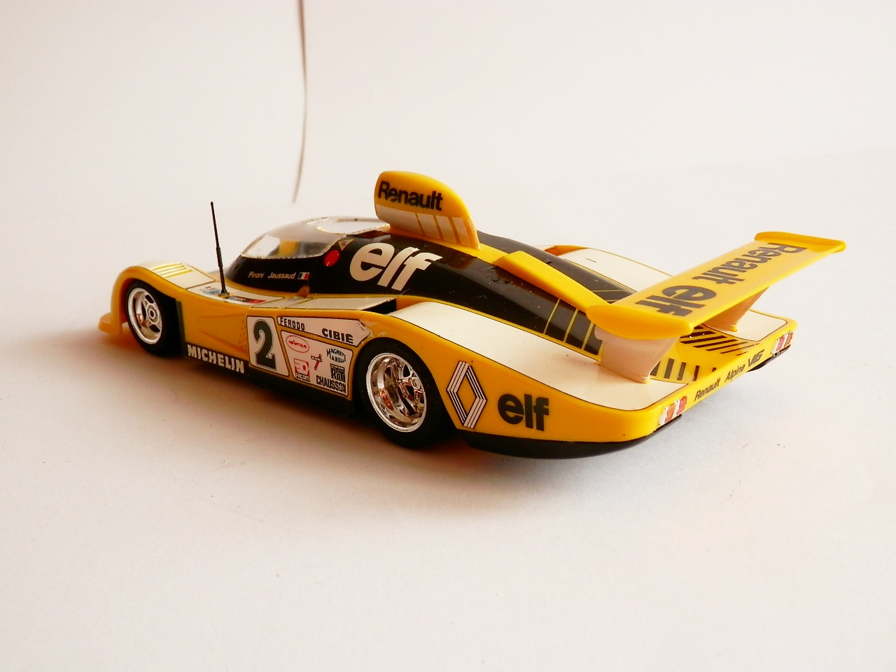
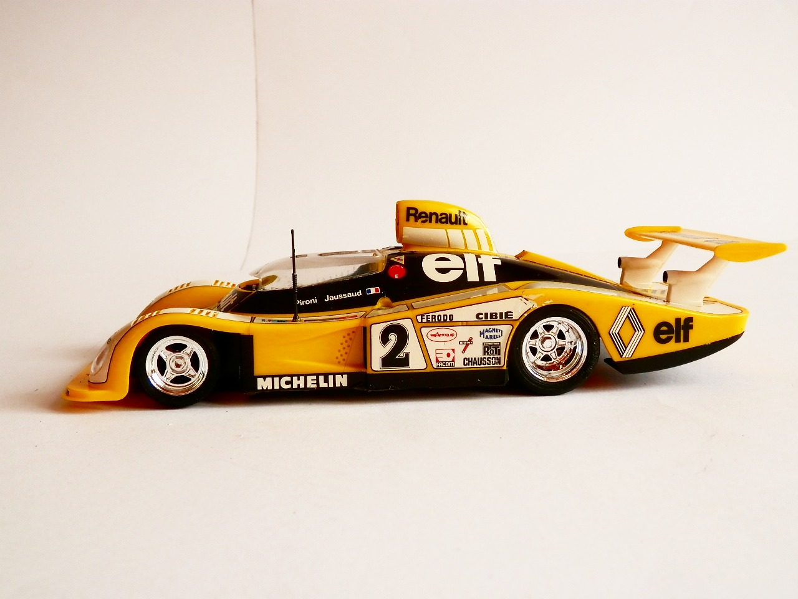

Auto e veicoli stradali · scale model archive
Alpine Renault A442B Turbo
Alpine Renault A442B Turbo — Kit: Tamiya, Scale: 1/24. 24H of Le Mans 1978 winner, interesting aerodynamic concept with a partially-faired cockpit

Photo gallery


English description
24H of Le Mans 1978 winner, interesting aerodynamic concept with a partially-faired cockpit
Descrizione italiana
Vincitrice della 24 Ore di Le Mans 1978; interessante soluzione aerodinamica con abitacolo parzialmente carenato.